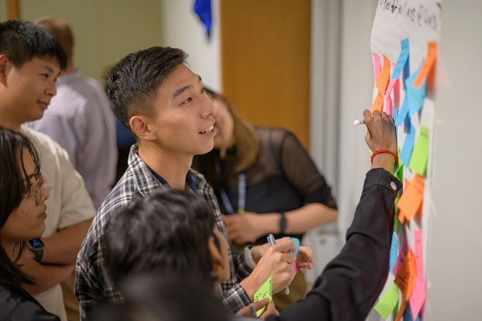
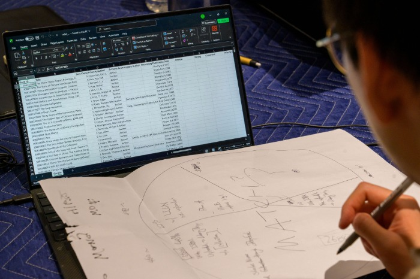

Embark On Your Engaged Learning Journey
Learning how to navigate early ambiguity is one of the most valuable professional capabilities you will gain at UMSI. Use this guide to establish clear communication, onducting initial meetings, and finalizing partnership agreements.
Why the Work Starts Before the Project

Engaged learning at UMSI is fundamentally different from traditional classroom assignments. You are stepping out of controlled environments and into complex, unscripted ecosystems where technical solutions intersect with human lives, organizational cultures, and real community needs.
The first impression you make on a client can shape the entire trajectory of the partnership. Knowing how to navigate communication, organization, and to hold a productive meeting can be crucial. Establishing and navigating a professional partnership is important, and it can take a simple class deliverable to a potential relationship for your career.
Navigating the Experience
To maximize what you get out of the experience, you need to understand how to create a good foundation for the project and the partnership.
Partner Communication
Relationships are all about communication and this project partnership no different. In order to create a strong foundation, you need to establish communciation preferences. Start with a conversation to create clear communication preferences. Ask about any deadlines, weekly emails you should send, or if meetings should be in-person or virtual.
Send a professional email or have a chat to establish these boundaries and expectations.
Questions to Consider
- What should happen in the event of a communication breakdown?
- Are there jargon or acronyms that are regularly used by members of your organization?
- How/when do you preferred to be contacted?
- How frequently will you check in?
- Do you plan to continue communication with your University partner after this project has concluded?
- How do you expect your University partner to interact with the media (if at all)?
First Meetings
First impressions shape the trajectory of a partnership. Communication is key. You want to ask clients specfic questions about the project and the timeline in order to create a strong foundation for your partnership.
By establishing clear team contracts, co-creating agendas, and aligning on project scope early, you build psychological safety within your team and trust with your client.
Recommended Client Meeting Agenda
- Introduction: Introduce yourself and others on the team. Mention your background and other relevant experience for the project.
- Organization and project introduction: Specfic questions about the organization, department, and team. Clarify expected outcomes and inquiry about any needed NDAs.
- Timeline review: Go over expected time to completion.
- Clarify contacts: Primary and secondary contacts for the student team and partner team. Verify emails and phone numbers.
- Communications planning: Determine how and the frequency of meeting. Explain your plan for communications responses and methods (ie: We will send you an email update each week on Wednesday.)
- Final questions and clarification: Make sure you have a strong understanding for the project.

Formalizing Agreements
Document team commitments and scope agreements shared by all stakeholders. In this experience, it is import to document everything. There will be many times that you may need to refer back to a client want, recall important feedback, or verify a role responsibility you must do. Documenting your experiences is not only benefical to you, but to others as well.
Creating a shared sheet for deadlines and meeting takeaways, a partnership agreement contract, or a document of key milestones and responsibilities can come in hand. Whether it'd be personal or shared, these items create trust between you and your client, ensuring everyone is on the same page.
Featured Starter Resources